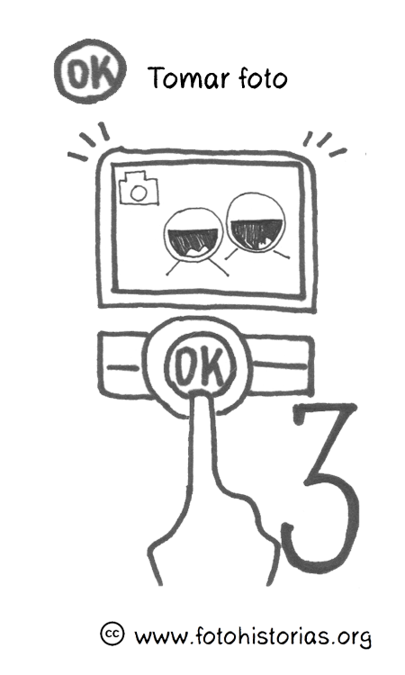

Fotohistorias
Participatory Photography with Hispanic Immigrants
About The Project
Photo Stories: life stories of the oppressed and the marginalized. Life stories of immigrant day laborers at Casa Latina and at Centro El Comedor will help surface the richness, diversity and depth of their roots, experiences, and aspirations. As an example of what de Souza Santos calls Sociology of Emergence, this project will offer a counter-narrative that demonstrate the power of their determination and re-valorizes their human dignity and their contribution to society.
Thousands of people cross or attempt to cross the border from Mexico to the US every year. Many are returned at the border, many others make it through and start a new life as immigrants in different US cities. These individuals are human beings with their own identities, dreams, aspirations, and struggles. Through this project we seek to highlight and re-value their life experiences and their views of culture and identity, as expressed in photography and stories. While offering tools and a space for reflection to immigrant day laborers, recently deported immigrants, and prospective immigrants to the US, we will explore how the reality of their present circumstance, as well as their larger culture and identity, is self-expressed through the photos they take and the stories they tell.
Find out more Here